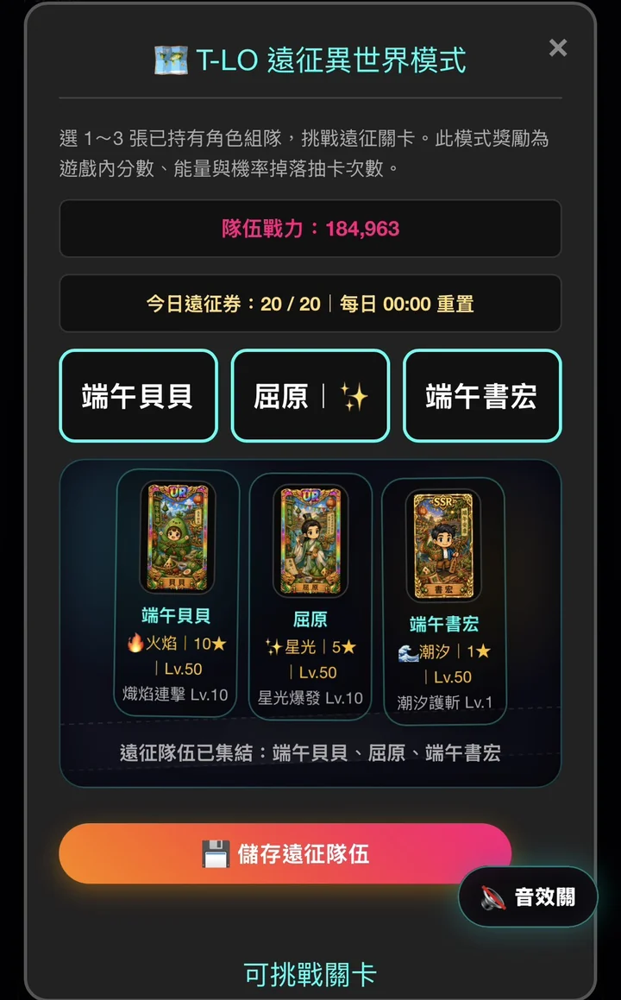
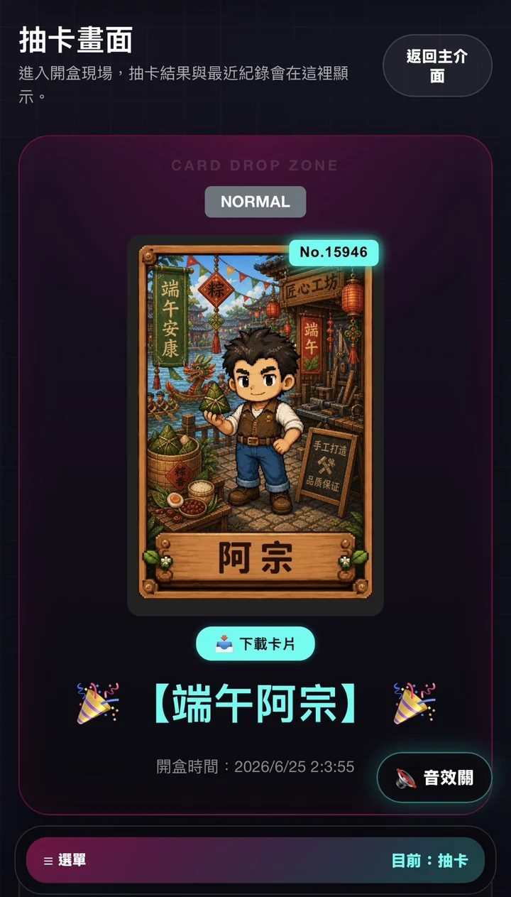
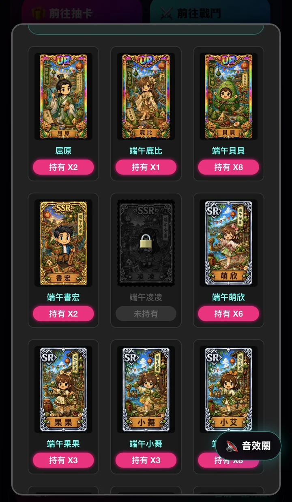

開盒抽卡
進入抽卡畫面開盒，取得不同稀有度角色卡，並保留近期開盒紀錄。
從抽卡、收藏到遠征挑戰，所有進度都會累積在玩家帳號中。
進入抽卡畫面開盒，取得不同稀有度角色卡，並保留近期開盒紀錄。
收藏已獲得角色卡，查看持有數量與未解鎖卡片，建立個人卡冊。
選擇已持有角色組成隊伍，挑戰遠征關卡，取得遊戲內分數與資源。
介面以手機直式操作為主，包含主介面、抽卡、收藏與遠征模式。



端午主題卡牌以節慶、龍舟、粽香與像素卡牌美術作為主要視覺。